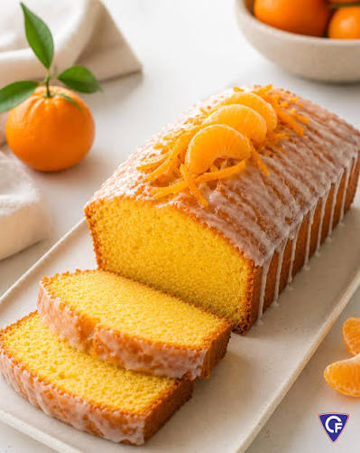

Receta 1: pizza casera Pasos: Preparar la masa de pizza Untar el molde con aceite Colocar la masa en el molde Agregar la salsa de tomate Esparcir el queso rallado Adicionar los ingredientes deseados Hornear a 180°C durante 15-20 minutos
Receta 2: budin de mandarina  Pasos: Preparar los ingredientes Mezclar los ingredientes secos Agregar los ingredientes líquidos Verificar la textura de la mezcla Hornear a 180°C durante 25-30 minutos